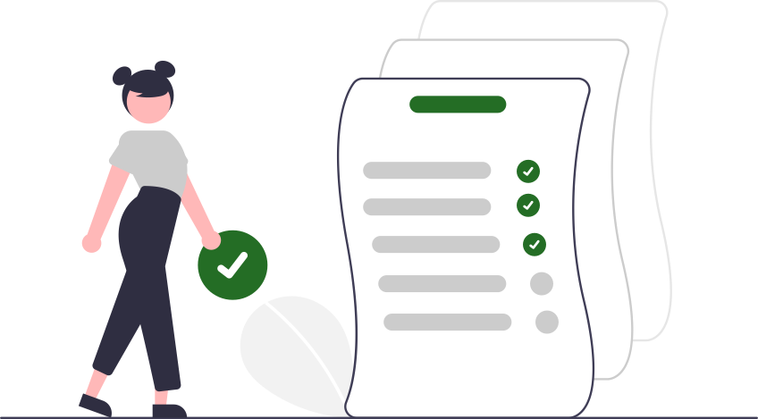

Welcome To TaskMaster
Take Control of Your Time, Focus on What Matters. TaskMaster is
a secure, scalable, and intuitive task management system
designed to help you create, organize, and prioritize tasks with
ease. Start achieving your goals today!
To use TaskMaster, click on get Started.

Key Features
Task Creation
Easily create tasks with titles, descriptions, deadlines, and
priorities.
Mark Tasks as Completed
Keep track of your progress by marking tasks as done or pending.
Search and Filter
Quickly find tasks by title or filter by priority and completion
status.
Edit Tasks
Modify tasks as your project evolves. Making changes to task
when necessary.
Delete Tasks
Delete or remove task from list for proper task management and
focus.
Pagination
Navigate through your tasks seamlessly with pagination controls.
Why Use TaskMaster?
TaskMaster simplifies your workflow, allowing you to focus on what
matters most. Whether you're managing personal projects or
collaborating with a team, our intuitive interface makes task
management easy and effective.
Join countless users who have enhanced their productivity and
organization with TaskMaster! Sign up now to experience the power of
efficient task management!
Start Your Free Trial